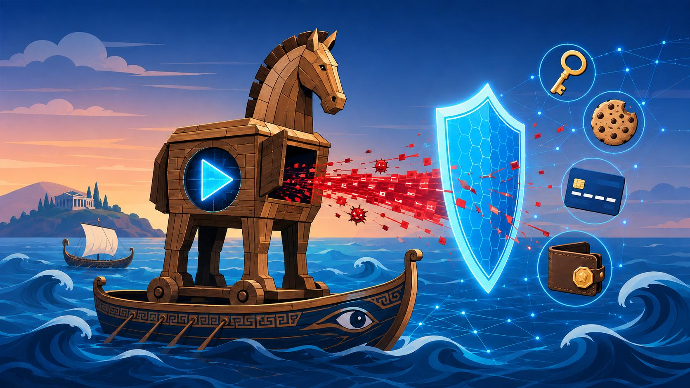
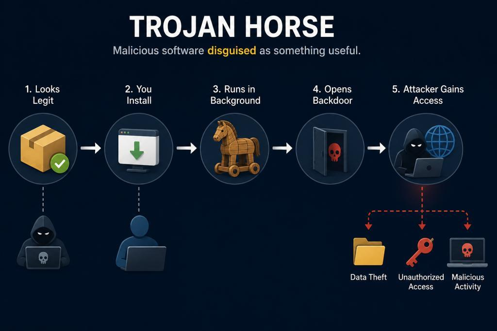
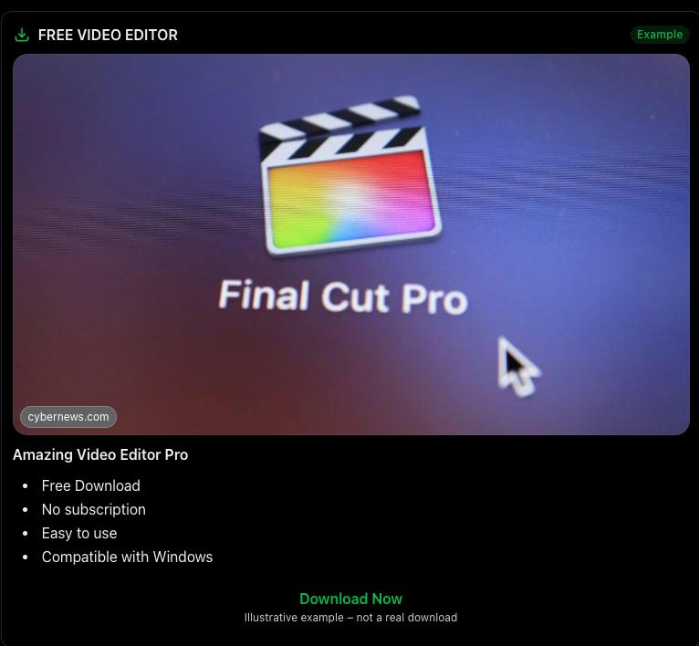
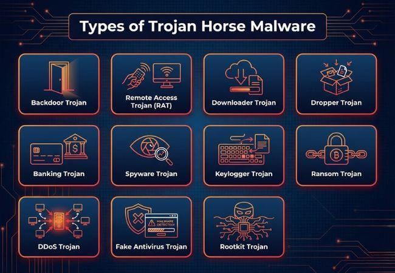

ရှေးခေတ်ဂရိဒဏ္ဍာရီထဲမှာ Trojan War လို့ခေါ်တဲ့ စစ်ပွဲကြီးတစ်ခု ရှိခဲ့တယ်။
ဂရိစစ်တပ်နဲ့ Troy မြို့သားတွေဟာ နှစ်ပေါင်းများစွာ စစ်တိုက်ခဲ့ကြတယ်။ နောက်ဆုံးမှာတော့ ဂရိစစ်တပ်ဟာ Troy မြို့ရိုးကို ဘယ်လိုမှ မကျော်နိုင်တော့ဘူး။ ဒါနဲ့ ဂရိစစ်သားတွေက ထူးဆန်းတဲ့ အကြံတစ်ခုကို စဉ်းစားလိုက်ကြတယ်။
သူတို့ဟာ အလွန်ကြီးမားတဲ့ သစ်သားမြင်းရုပ်ကြီးတစ်ခုကို တည်ဆောက်ခဲ့ကြတယ်။ အဲဒီမြင်းရုပ်ကြီးရဲ့ အတွင်းမှာတော့ ဂရိစစ်သားတချို့ကို ဝှက်ထားခဲ့ကြတယ်။ ပြီးတော့ ဂရိစစ်တပ်က ဆုတ်ခွာသွားသလို ဟန်ဆောင်ခဲ့တယ်။
📧 Troy မြို့သားတွေက စစ်ပွဲပြီးသွားပြီလို့ ထင်ပြီး အဲဒီမြင်းရုပ်ကြီးကို အောင်ပွဲအထိမ်းအမှတ် လက်ဆောင်တစ်ခုလို့ ယူဆခဲ့ကြတယ်။ သူတို့ဟာ မြင်းရုပ်ကြီးကို မြို့ရိုးအတွင်းထဲအထိ ဆွဲသွင်းခဲ့ကြတယ်။ ဒါပေမဲ့ ညအချိန်ရောက်တဲ့အခါ...
မြင်းရုပ်ကြီးအတွင်းမှာ ပုန်းအောင်းနေတဲ့ ဂရိစစ်သားတွေ ထွက်လာပြီး မြို့တံခါးကို ဖွင့်ပေးလိုက်ကြတယ်။ အပြင်မှာ စောင့်နေတဲ့ ဂရိစစ်တပ်က မြို့ထဲကို ဝင်ရောက်တိုက်ခိုက်ခဲ့ကြတယ်။
Troy မြို့သားတွေဟာ ရန်သူကို အပြင်မှာပဲ ရှာနေခဲ့ကြပေမဲ့ တကယ့်အန္တရာယ်က သူတို့ကိုယ်တိုင် ယုံကြည်ပြီး မြို့ထဲသွင်းခဲ့တဲ့ လက်ဆောင်ထဲမှာ ရှိနေခဲ့တာပါ။
ဒီအကြောင်းအရာဟာ Trojan Horse လို့ လူသိများလာခဲ့တယ်။
(မှတ်ချက် — Trojan Horse ဇာတ်လမ်းဟာ ရှေးဂရိဒဏ္ဍာရီနဲ့ စာပေထဲမှာ လူသိများတဲ့ ဇာတ်လမ်းဖြစ်ပြီး သမိုင်းပညာရှင်တွေက အဖြစ်မှန်အဖြစ် အတည်ပြုထားတဲ့ ဖြစ်ရပ်တစ်ခုတော့ မဟုတ်ပါဘူး။)
အခုတော့ ရှေးခေတ် Troy မြို့ကနေ ယနေ့ခေတ် Computer လောကဆီ ပြန်လာကြရအောင်။
ဒီတစ်ခါ မြင်းရုပ်ကြီးအစား Software တစ်ခုကနေ အန္တရာယ်ဝင်လာနိုင်တယ်ဆိုရင်ရော?

အဲဒါကို Trojan Horse Malware လို့ ခေါ်ကြတယ်။
Trojan ဆိုတာ Computer ထဲမှာ အသုံးဝင်တဲ့ Software တစ်ခုလို ဟန်ဆောင်ထားပေမဲ့ အတွင်းမှာတော့ အန္တရာယ်ရှိတဲ့ Malicious Code ပါဝင်နေတဲ့ Malware အမျိုးအစားတစ်ခုပါ။
ဥပမာ...
မင်းက Video Editing လုပ်ချင်လို့ Internet ပေါ်မှာ Free Video Editor တစ်ခု ရှာနေတယ်။
အဲဒီအချိန်မှာ...

ဆိုတဲ့ ကြော်ငြာလေးတစ်ခု တွေ့လိုက်တယ်။
မင်းလည်း စိတ်ဝင်စားသွားပြီး Download လုပ်လိုက်တယ်။ Install လုပ်လိုက်တယ်။ Software ကလည်း ပုံမှန်အတိုင်း ဖွင့်လို့ရတယ်။ Video တွေလည်း Edit လုပ်လို့ရတယ်။။
ဒါပေမဲ့ မင်းမသိလိုက်တဲ့အရာတစ်ခု ရှိနေတယ်။ အဲဒီ Software ရဲ့ နောက်ကွယ်မှာ မင်းရဲ့ အချက်အလက်တွေကို ခိုးယူနိုင်တဲ့ Malicious Code တစ်ခု ပါဝင်နေနိုင်တယ်။ မင်းက Video Editor တစ်ခုကို Install လုပ်လိုက်တယ်လို့ ထင်နေပေမဲ့ တကယ်တော့ ကိုယ့် Computer ထဲကို ရန်သူတစ်ယောက်ကို ကိုယ်တိုင်ဖိတ်ခေါ်လိုက်မိတာ ဖြစ်နိုင်တယ်။
ဒါဟာ Trojan Malware ရဲ့ အဓိက လှည့်ကွက်ပါပဲ။
Trojan တစ်ခုရဲ့ လုပ်ဆောင်ပုံကို အဆင့်လိုက် ကြည့်ရအောင်။
Trojan ဟာ အသုံးဝင်တဲ့ Software၊ Game၊ Cracked Application၊ Email Attachment စတာတွေရဲ့ ပုံစံကို ယူပြီး လူတွေကို ယုံကြည်အောင် လုပ်တတ်တယ်။
အသုံးပြုသူက အဲဒီ Software ကို ယုံကြည်ပြီး Download လုပ်၊ Run လုပ်၊ Install လုပ်လိုက်တဲ့အခါ အန္တရာယ်ရှိတဲ့ Code ကို Execute လုပ်မိနိုင်တယ်။
Trojan ရဲ့ အမျိုးအစားပေါ်မူတည်ပြီး...
Password တွေ ခိုးယူနိုင်တယ်။
ကိုယ်ရေးကိုယ်တာ အချက်အလက်တွေကို ခိုးယူနိုင်တယ်။
Keyboard မှာ ရိုက်လိုက်တဲ့ စာတွေကို မှတ်တမ်းတင်နိုင်တယ်။
အခြား Malware တွေကို Download လုပ်နိုင်တယ်။
တချို့အမျိုးအစားတွေက အဝေးကနေ Computer ကို ထိန်းချုပ်ခွင့်ပေးနိုင်တယ်။
Trojan အချို့ဟာ Computer ပြန်ဖွင့်တဲ့အခါမှာလည်း အလုပ်လုပ်နိုင်ဖို့ Persistence နည်းလမ်းတွေ အသုံးပြုတတ်တယ်။ တချို့ကတော့ အဝေးကနေ Command တွေလက်ခံဖို့ Command-and-Control (C2) Server နဲ့ ချိတ်ဆက်နိုင်တယ်။
ဒါပေမဲ့ Trojan အားလုံးက ဒီအဆင့်တိုင်းကို အသုံးပြုတာတော့ မဟုတ်ပါဘူး။

Trojan တိုင်းဟာ တူညီတဲ့အလုပ်ကို မလုပ်ကြဘူး။ သူတို့ရဲ့ ရည်ရွယ်ချက်အလိုက် အမျိုးမျိုး ကွဲပြားကြတယ်။
တစ်ယောက်ယောက်က မင်းရဲ့ Computer ကို အဝေးကနေ ခွင့်ပြုချက်မရှိဘဲ ထိန်းချုပ်နိုင်အောင် လုပ်နိုင်တဲ့ Trojan အမျိုးအစားပါ။
Online Banking၊ Financial Account နဲ့ ငွေကြေးဆိုင်ရာ အချက်အလက်တွေကို ခိုးယူဖို့ ရည်ရွယ်ထားတယ်။
အသုံးပြုသူရဲ့ လုပ်ဆောင်မှုတွေကို လျှို့ဝှက်စောင့်ကြည့်ပြီး အချက်အလက်တွေ စုဆောင်းနိုင်တယ်။
Computer ထဲကို ဝင်ရောက်ပြီး အခြား Malware တွေကို Download လုပ်ပေးနိုင်တယ်။
ပုံမှန် Security Control တွေကို ရှောင်ပြီး နောက်ကွယ်ကနေ ဝင်ရောက်နိုင်တဲ့ လမ်းကြောင်းတစ်ခု ဖန်တီးပေးနိုင်တယ်။
Trojan နည်းလမ်းနဲ့ ဖြန့်ဝေခံရပြီး File တွေကို Encrypt လုပ်ကာ ပြန်လည်ရယူဖို့ ငွေတောင်းခံနိုင်တဲ့ Malware မျိုးလည်း ရှိတယ်။
ဒီသုံးခုဟာ Malware အမျိုးအစားတွေ ဖြစ်ပေမဲ့ အလုပ်လုပ်ပုံ မတူညီပါဘူး။
ဒီအချက်လေးတွေကို မှတ်ထားပါ။
ရှေးခေတ် Troy မြို့သားတွေဟာ သစ်သားမြင်းကြီးကို လက်ဆောင်လို့ ယုံကြည်ခဲ့ကြတယ်။
ယနေ့ခေတ် Computer အသုံးပြုသူတွေကတော့ Free Software၊Game၊ Application တွေကို ယုံကြည်ပြီး Install လုပ်တတ်ကြတယ်။
အခြေအနေနှစ်ခုလုံးမှာ တူညီတဲ့အချက်က...
ဒါကြောင့်...
အန္တရာယ်ဟာ ယုံကြည်စရာကောင်းတဲ့ ပုံစံတစ်ခုနဲ့ ဝင်လာနိုင်တယ်ဆိုတာပါပဲ။ ဒါကြောင့် နောက်တစ်ကြိမ် Free Software တစ်ခု Download လုပ်တော့မယ်ဆိုရင် ကိုယ့်ကိုယ်ကို မေးကြည့်ပါ။
"ဒီ Software က တကယ်ပဲ ငါ့ကို ကူညီပေးမယ့်အရာလား။ ဒါမှမဟုတ် Trojan Horse တစ်ကောင်လား?"
Stay Curious. Stay Safe. Think Before You Click! 🔐
Application တစ်ခုက မလိုအပ်တဲ့ Permission တွေ တောင်းလာရင် သေချာစစ်ဆေးပါ။